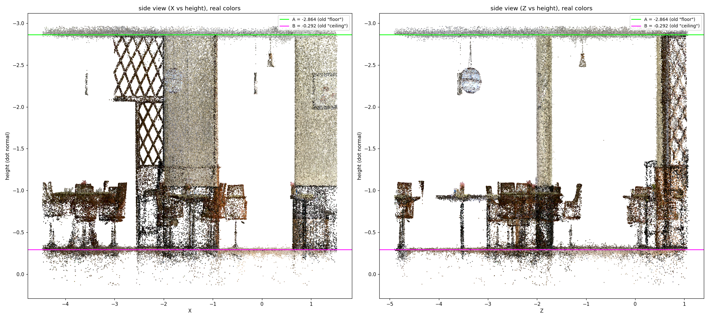
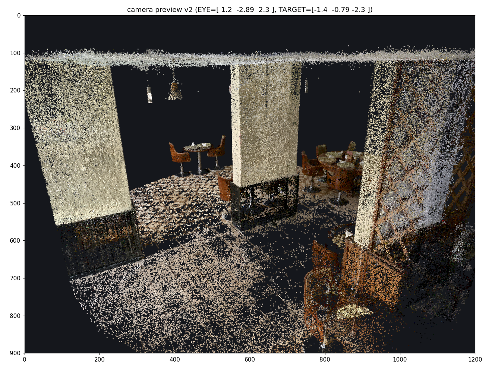

EXP-007: Real2Sim — Rigid-Body Physics Directly on a Gaussian Splat¶
Owner: Tushar Vaidya Start Date: 2026-09-15 Last Updated: 2026-09-15 Status: Active — successful, conclusive first demo (rigid-body-proxy tier); production-fidelity splat rendering achieved
Goal¶
Test whether 3D/physics properties (a falling, bouncing rigid body) can be added directly on a Gaussian Splat representation — without first converting the scene to a mesh — and rendered convincingly in the same splat world the scene was captured in.
This is a direct alternative to the mesh-conversion direction explored in prior weeks (see Background): rather than extracting mesh/USD geometry from splats (as in EXP-006) and running physics on that mesh, this experiment keeps the environment as a native Gaussian Splat and adds a physics-driven rigid body into that same representation.
Hypothesis¶
- A rigid-body-proxy formulation — simulate a single point mass/collider, reapply its transform (
pos,quat) to every Gaussian in an object each frame — is sufficient to demonstrate physically plausible motion (falling, bouncing, spin-on-impact) without needing continuum (MPM) or mesh/cage+skinning approaches. - A real captured splat scene's floor plane can be identified and used as collision geometry for this physics, without converting the scene to mesh first.
- The result can be rendered with the same visual fidelity as viewing the scene directly in SuperSplat, by using the same underlying renderer (PlayCanvas's
GSplatComponent) rather than an approximation.
All three held. (2) required correcting a floor/ceiling detection inversion bug along the way — see Method.
Background¶
Over the preceding weeks, the real2sim physics investigation was mostly directed at the mesh-conversion path: extract mesh/USD geometry from a splat (RANSAC plane fits, convex-hull slabs, Poisson reconstruction — see EXP-006), then apply physics/rigid-body setup to that mesh (e.g. in Isaac Sim). Those results were shared with Rajat on a call last Friday (2026-09-12); the verdict on that direction was non-conclusive, with several open issues discussed (mesh fidelity from sparse splat samples, texture baking quality, lack of real asset libraries for added objects).
The approach in this experiment — apply physics directly on the splat representation itself, via a rigid-body-proxy transform reapplied to Gaussians (or, in this specific demo, to a synthetic rigid mesh composited into the same splat-rendered scene) — was initially discussed with Rajat, and the formulation was walked through with Parikshit on 2026-09-15 (same day). This experiment is the first working, conclusive demonstration of that direction.
Restaurant scene (SuperSplat "Manica SkyView", scene.ply, 4.97M Gaussians)
↓
Crop to full room (radius-based crop around the dining area) → room_crop.ply (1.31M Gaussians)
↓
Floor/ceiling plane detection — corrected after an inversion bug (see Method §1)
↓
Rigid-body-proxy physics (gravity, floor collision, restitution, spin-on-impact)
↓
Composited into the real splat world via PlayCanvas's native GSplatComponent
(same engine SuperSplat's own editor runs on)
Method¶
1. Floor/ceiling detection — found inverted, corrected by direct visual check¶
An earlier automatic floor detection (used to build a tighter table_crop.ply) picked the wrong one of two candidate horizontal planes as "floor." The bug was caught by the user directly inspecting the scene, not by any statistic — the same lesson from EXP-006 §5 recurred here: a rendered image resolves floor/ceiling ambiguity faster and more reliably than height-histogram statistics, which were genuinely ambiguous in this case (both candidate planes had a large, sharp, "most of the room on one side" density signature — the very feature that was supposed to make one of them clearly the floor).
The decisive check was a real side-view scatter render of room_crop.ply, colored by actual per-Gaussian color:
- Pendant lights hang down from the plane at raw
y ≈ -2.865→ this is the ceiling. - Tables and chairs physically rest on the plane at raw
y ≈ -0.293→ this is the floor.
Corrected values: floor y = -0.2927, ceiling y = -2.8647, room height 2.57 m — a physically sane restaurant ceiling height, consistent with the fix. Physical "up" in this scene's raw coordinates is -Y, not +Y (opposite of the naive default assumption).

2. Camera framing verified offline before wiring into any viewer¶
Rather than iterating blind in-browser, camera eye/target positions were sanity-checked with an offline Python projection render against the real room_crop.ply data (same look-at math intended for the live demo), to confirm the room reads right-side-up (ceiling+lights up top, pillars, tables/chairs on the floor) before committing to a live page.

3. First pass: Canvas2D stand-in (reference-demo tier)¶
Following a prior-session methodology doc's own reference-demo pattern, a first version rendered real per-Gaussian data (position, color, effective isotropic radius from the geometric mean of the two largest scale axes, opacity) as flat/radial-gradient circles on a Canvas2D, with a procedural sphere-of-splats "ball" falling under hand-rolled gravity/bounce physics.
This version worked functionally (correct floor collision, correct spin-on-impact, correct back-to-front depth sort for alpha blending) but looked visually disproportionate — flat circles standing in for true anisotropic Gaussians don't carry real scale/shape information, so splats looked "too big" relative to the real world. This was expected and explicitly flagged as a stand-in tier, not a defect.
4. Production pass: native PlayCanvas GSplatComponent¶
The Canvas2D approximation was replaced with the actual splat renderer: room_crop.ply is loaded, full-resolution and unmodified, as a native gsplat asset in a PlayCanvas application — the same engine SuperSplat's own editor is built on. This eliminates the "too big" issue entirely, since every Gaussian is now rendered with its true scale, rotation, and opacity by the real rasterizer, not an approximation.
The ball is a rigid-body proxy per the core formula:
world_position[i] = pos + R(quat) * local_offset[i] // reapplied every frame
implemented here as a single rigid mesh entity (a sphere) whose position/rotation is driven by hand-rolled gravity + floor-collision + restitution + rolling-friction-to-spin physics (no external physics engine dependency — this is the "rigid-body proxy" cost tier, cheapest of the three tiers considered: continuum/MPM, mesh+cage skinning, rigid-body proxy).
5. Visual parity with SuperSplat's own editor defaults¶
To make the composited result match what viewing room_crop.ply directly in SuperSplat (superspl.at/editor?load=...) looks like, the demo's camera/render settings were pulled directly from SuperSplat's own scene-config.ts defaults rather than left at arbitrary values:
| Setting | SuperSplat default | Applied here |
|---|---|---|
| FOV | 85° | 85° |
| Background | pure black | pure black |
| Tone mapping | linear | linear (TONEMAP_LINEAR) |
| Exposure | 1.0 | 1.0 |
| Floor grid | shown | approximated via app.drawLine() at the corrected floor height |
The splat rendering itself was already identical (same GSplatComponent); this pass matches the surrounding camera/render settings so the overall look matches too. SuperSplat's own editor UI chrome (selection tools, bounding-box overlay, its bespoke orbit-camera implementation) is app-specific code, not reproduced — the grid is a visual approximation, not a literal reuse of SuperSplat's renderer.
Impediments¶
Current Blockers
- The ball is a synthetic rigid mesh composited alongside the real splats, not itself a segmented cluster of real Gaussians — full per-Gaussian rigid-body treatment (segment a real round object's own splats, compute local offsets, reapply transform to each) has not yet been demonstrated on a real object, only on this synthetic stand-in
- No real physics engine (cannon-es / Rapier / PhysX / ammo.js) is wired in yet — gravity/bounce/friction is hand-rolled, sufficient for a single sphere vs. a flat plane but won't extend to general collider shapes or multi-object contact
-
room_crop.plyis 310 MB; the production PlayCanvas demo takes under ~2 minutes to load on a typical connection — acceptable for a demo, not yet optimized (e.g. via PlayCanvas's newer SOG compressed format) - SuperSplat's own editor UI chrome (bounding-box overlay, selection tools, its bespoke camera controller) is not reproduced — only the render-relevant settings (FOV, tonemap, exposure, background, grid) were matched
Known Risks
- Floor/ceiling detection from height-density statistics alone was genuinely ambiguous on this scene (§1) — any future automatic floor detection should budget for a direct visual confirmation render, not trust a statistical heuristic alone, even one that looks decisive (large weight, sharp peak, "most points on one side")
- The corrected floor/up convention (
-Yis physically up) is specific to this scene's own raw coordinate convention and was derived empirically, not from any metadata — a different scene/export could have the opposite or a different-axis convention entirely
Evaluation Protocol¶
- Metric: qualitative — physical plausibility of motion (falls under gravity, bounces with energy loss, picks up spin on impact, settles/loops) and visual fidelity (does the splat rendering match viewing the same file directly in SuperSplat)
- Real environment: restaurant scene ("Manica SkyView" sample), full-room crop including floor, ceiling, pillars, and multiple table+chair groups
Results¶
Conclusive: 3D/physics properties can be added directly on the Gaussian Splat representation and used — the ball falls, bounces on the real detected floor plane, and picks up spin on impact, composited live into the same real, full-resolution splat world visible in SuperSplat, with matching camera/render settings.
Deliverables:
| Artifact | Description |
|---|---|
| Splat world (SuperSplat editor) | The generated/cropped Gaussian Splat world (room_crop.ply, 1.31M Gaussians, floor+ceiling+pillars+tables+chairs), viewable and interactable directly in SuperSplat |
| Bouncing ball demo (PlayCanvas) | The same splat world loaded via native GSplatComponent, with a physics-driven rigid-body ball bouncing on the corrected floor. Takes under ~2 minutes to load (full-resolution 310 MB splat) |
Both are served from a cloudflared tunnel over the project's own CORS-enabled file server; see References for the underlying files.
Lessons Learned¶
- A rendered image settles floor/ceiling ambiguity faster than statistics, even when the statistics look decisive. Both candidate planes here had a large, sharp density peak with "most of the room on one side" — exactly the signature a naive heuristic would call conclusive — and it still picked the wrong one. This is the same lesson as EXP-006 §5, now confirmed on a second, independent scene: default to a direct visual check before trusting an automatic floor/orientation classifier.
- Verify camera framing offline before shipping a live viewer. An earlier iteration of a splat-world crop needed a "kill it, start over" cycle after the user found the framing unconvincing; sanity-checking eye/target positions with an offline projection render against the real data first avoided repeating that cycle here.
- A Canvas2D stand-in for splats is fine for validating physics logic, but looks wrong at real-world scale. Flat/radial-gradient circles don't carry true per-Gaussian scale/anisotropy, so proportions look "too big" even when the underlying position/opacity data and physics are correct. Swapping to the real renderer (PlayCanvas
GSplatComponent) fixed this immediately, since it's the same rasterizer SuperSplat itself uses. - Matching a target viewer's look is mostly about matching its concrete render settings, not reimplementing its UI. Pulling FOV/exposure/tonemap/background straight from SuperSplat's own
scene-config.tsdefaults got the demo visually in line with SuperSplat's editor without needing to reproduce its editor chrome (grid was approximated, bounding-box/selection UI was not attempted). - The rigid-body-proxy tier (single transform reapplied each frame) is sufficient to demonstrate "physics on splats" convincingly without needing a full physics engine or continuum/mesh-skinning approach — validates the cheapest of the three tiers considered as the right starting point for this class of demo.
Next Steps¶
- Segment a real round object's own Gaussians from a captured scene (rather than a synthetic ball) and apply the same rigid-body-proxy formula to its actual per-Gaussian local offsets, to validate the full pipeline on real object data, not just a stand-in
- Wire in a real physics engine (cannon-es or Rapier, per the methodology doc's own recommendation) to support general colliders and multi-object contact, beyond a single hand-rolled sphere-vs-plane case
- Evaluate PlayCanvas's newer SOG compressed splat format to cut the ~2-minute load time for
room_crop.ply - Compare this direction head-to-head against the mesh-conversion direction (EXP-006) on the same scene/object, to give Rajat/Parikshit a like-for-like basis for the meeting discussion
- Extend beyond rigid motion if a use case needs deformation (would require moving to the mesh/cage+skinning tier, per the methodology doc — rigid-proxy doesn't extend to soft-body directly)
References¶
- Prior mesh-conversion direction: EXP-006 — same "floor/ceiling ambiguity resolved by direct visual check" lesson recurred independently on this scene
- Restaurant source scene: SuperSplat sample "Manica SkyView" (
scene.ply, 4.97M Gaussians) - PlayCanvas engine
GSplatComponent/ SuperSplat editor (playcanvas/supersplat,playcanvas/engine) — same renderer used for both the interactive splat-world link and the bouncing-ball demo - Working files:
/data/fast/workspaces/tushar/alia16k_capture2/cam4_single/restaurant/—room_crop.ply,floor_meta_corrected.npz,bouncing_ball_demo.html(Canvas2D reference tier),bouncing_ball_playcanvas.html(production tier)